The Moats Family Private Investment Portfolio
About
Founded and Operated by Jan Moats
Moats Capital exists solely to manage the wealth of the Moats family. It is not a financial services company and does not accept outside investment.

The Moats Family Private Investment Portfolio
Founded and Operated by Jan Moats
Moats Capital exists solely to manage the wealth of the Moats family. It is not a financial services company and does not accept outside investment.